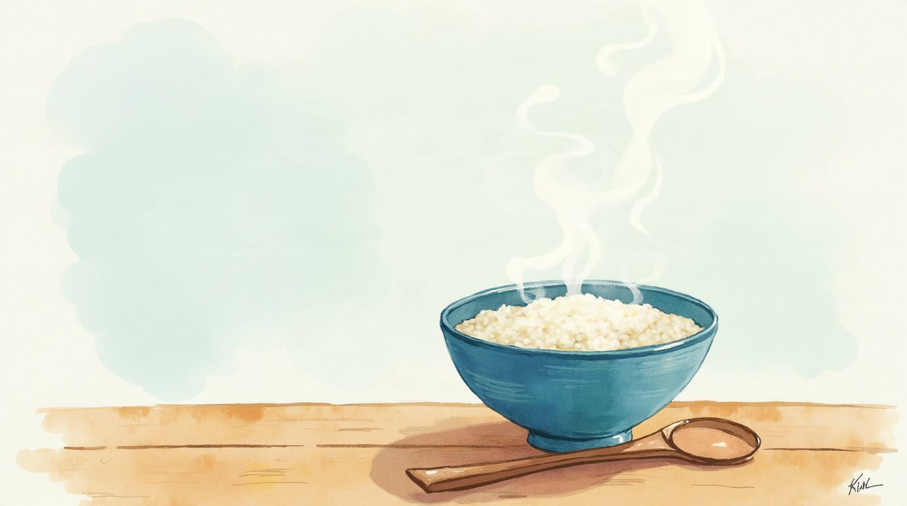
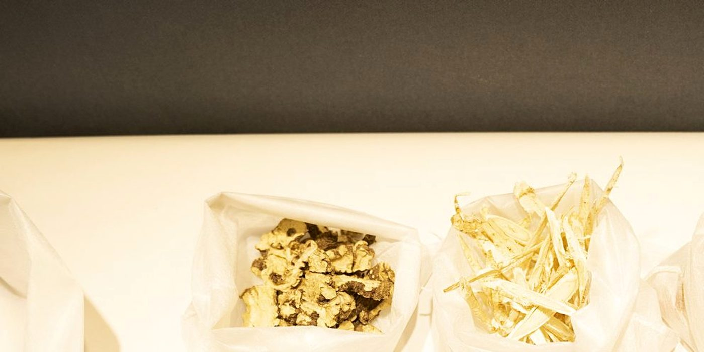

만성 소화불량은 더부룩함, 속쓰림, 식후 불편, 대변 상태를 일상의 말로 묻고 식사·잠·스트레스·몸의 온기와 함께 살피며, 체중 감소나 혈변 같은 경고 증상이 있으면 먼저 병원 검사를 권합니다.
여쭙는 것
- 어떤 불편이 가장 큰가요? (더부룩함, 속쓰림, 신물, 메스꺼움, 트림, 가스)
- 식사 전, 식사 중, 식사 뒤 중 언제 불편한가요?
- 먹고 나서 얼마나 지나 불편한가요?
한의원에서 함께 살필 것
- 식후 더부룩하거나 속이 쉽게 불편한 경우, 소화 기능과 식사 속도, 생활 긴장을 함…
- 변 습관이 들쭉날쭉하거나 배가 자주 차는 경우, 장의 리듬과 수분·식이 습관을 함께…
- 스트레스를 받으면 속이 먼저 불편해지는 경우, 감정과 소화의 연결을 함께 살핍니다.
속이 더부룩하고 소화가 잘 안 되는 상태가 오래 이어지면 "나는 원래 소화가 약해"라고 넘기기 쉽습니다. 하지만 소화가 불편해진 시점과 상황을 들어 보면 단서가 있는 경우가 많습니다.
먼저 이렇게 여쭙니다
- 어떤 불편이 가장 큰가요? (더부룩함, 속쓰림, 신물, 메스꺼움, 트림, 가스)
- 식사 전, 식사 중, 식사 뒤 중 언제 불편한가요?
- 먹고 나서 얼마나 지나 불편한가요?
- 찬 음식, 기름진 음식, 밀가루, 커피 중 불편을 키우는 것이 있나요?
- 대변은 규칙적인가요? 묽거나 변비가 있나요?
- 잠과 스트레스는 어떤가요?

소화만 따로 보지 않습니다
몸따삶잘의 눈으로 소화를 몸의 온기, 잠, 대소변, 통증, 평소 생활과 함께 봅니다. 잠을 설치면 속이 불편해지는 분도 있고, 속이 불편해서 잠을 설치는 분도 있습니다. 식사 시간과 속도, 먹는 순서, 야식과 음료 같은 습관도 함께 여쭙니다.
진료는 이렇게 이어집니다
1. 불편의 모습과 생활 습관을 듣습니다. 2. 필요하다고 판단될 때 필요한 방법으로 진찰합니다. 3. 식사와 생활에서 바꿔 볼 수 있는 것부터 정하고, 필요하다고 판단될 때 침이나 한약 등을 함께 씁니다. 4. 달라진 점을 기록하고 다음 진료에서 이어서 여쭙니다.

한의원에서 함께 살필 수 있는 경우
- 식후 더부룩하거나 속이 쉽게 불편한 경우, 소화 기능과 식사 속도, 생활 긴장을 함께 살핍니다.
- 변 습관이 들쭉날쭉하거나 배가 자주 차는 경우, 장의 리듬과 수분·식이 습관을 함께 살핍니다.
- 스트레스를 받으면 속이 먼저 불편해지는 경우, 감정과 소화의 연결을 함께 살핍니다.
진료실에서 이야기를 들은 뒤 어떤 방법이 맞을지 함께 정합니다.
이런 증상은 검사로 먼저 확인합니다
다음 증상이 있으면 한의원 진료에 앞서 내과 등에서 검사를 받으시기를 권합니다.
- 이유 없이 체중이 줄어드는 경우
- 검은 변이나 피가 섞인 변이 나오는 경우
- 음식을 삼키기 어렵거나 계속 토하는 경우
- 빈혈이 있다는 말을 들은 경우
- 나이가 들어 새로 생긴 소화 증상이 점점 심해지는 경우
- 가족 중에 위암이나 대장암이 있는 경우
복용 중인 약을 알려 주세요
위장약, 진통소염제, 아스피린, 그 밖에 먹는 약과 영양제를 모두 알려 주세요. 약을 임의로 끊거나 줄이지 마시고 처방한 의사와 상의해야 합니다.
자주 묻는 질문
만성 소화불량은 한의원에서 어떻게 살피나요?
불편의 모습과 시점, 식사 습관, 대변 상태를 먼저 묻고 잠·스트레스·몸의 온기와 함께 생활 전체의 리듬 속에서 살핍니다.
내시경 검사를 먼저 받아야 하나요?
체중 감소, 혈변이나 검은 변, 삼킴 곤란, 지속적인 구토, 빈혈 같은 경고 증상이 있으면 먼저 병원 검사를 권합니다. 필요하면 검사를 안내합니다.
소화제를 먹고 있는데 진료받을 수 있나요?
네, 복용 중인 약을 모두 알려 주세요. 약은 임의로 끊거나 줄이지 마시고 처방한 의사와 상의해야 합니다.
모든 환자가 같은 검사를 받나요?
아니요. 말씀해 주신 증상에 따라 필요하다고 판단될 때만 필요한 방법으로 살핍니다.
이 글은 일반적인 건강 정보이며 개인의 진단이나 치료를 대신하지 않습니다. 증상이 있거나 복용 중인 약이 있다면 진료를 통해 확인하세요. 치료 효과는 개인마다 다를 수 있습니다.
좋은꿈참사랑한의원 노량진점은 재진 때 지난번 이야기부터 이어서 여쭙니다. 진료시간과 예약은 오시는 길에서 확인하세요.